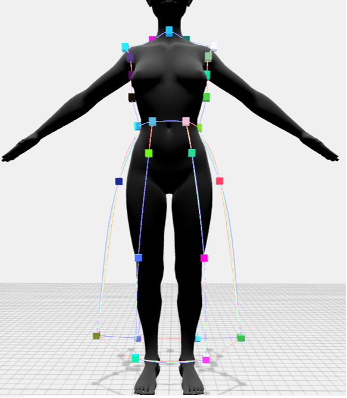
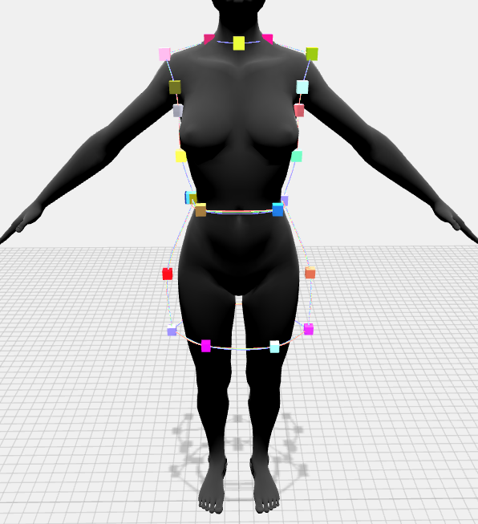
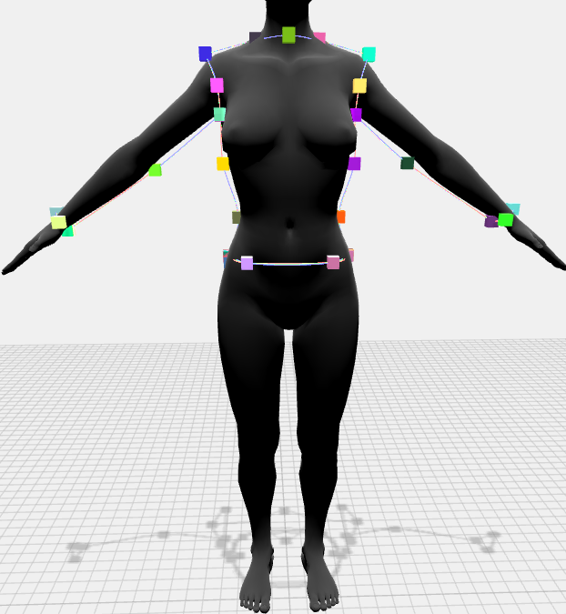
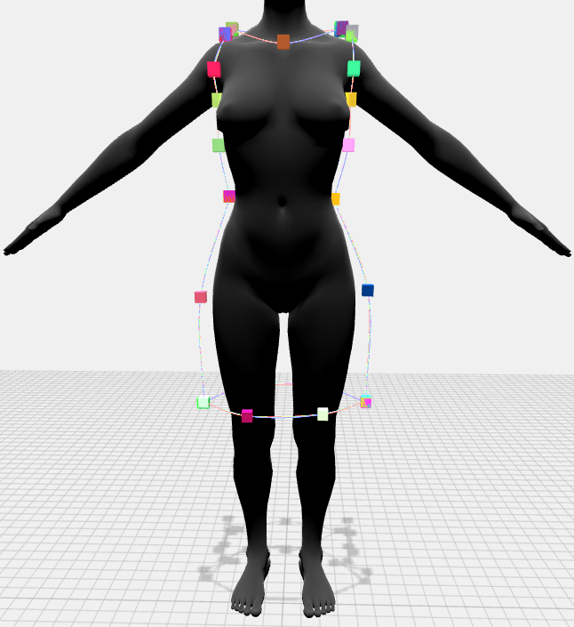
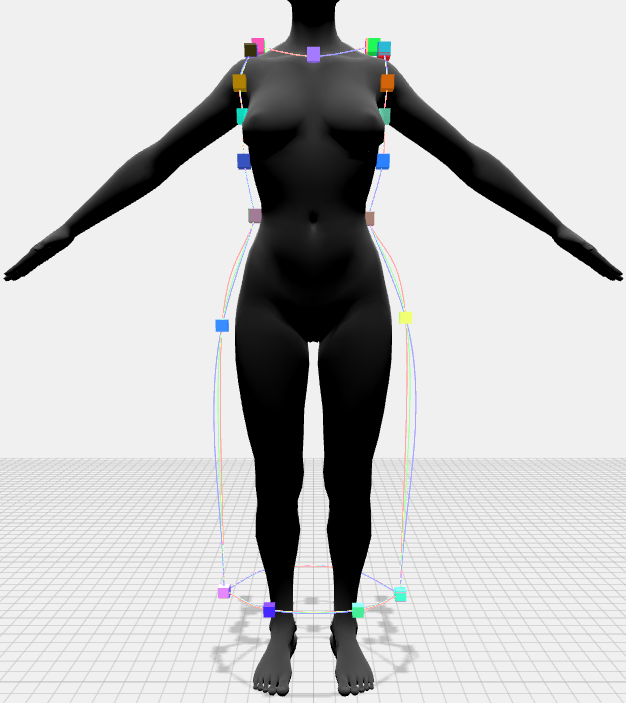
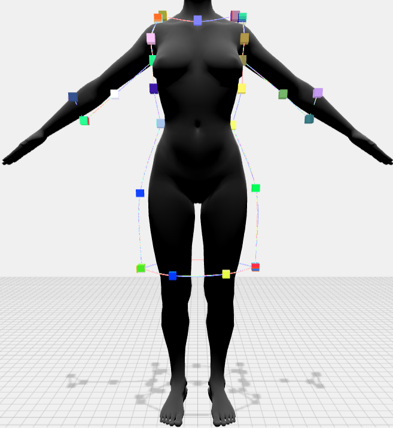
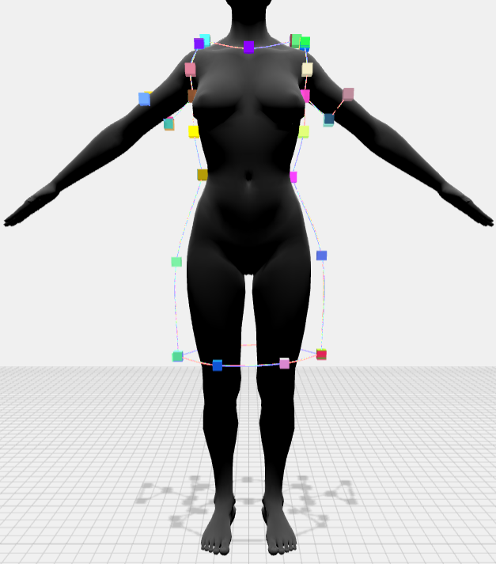
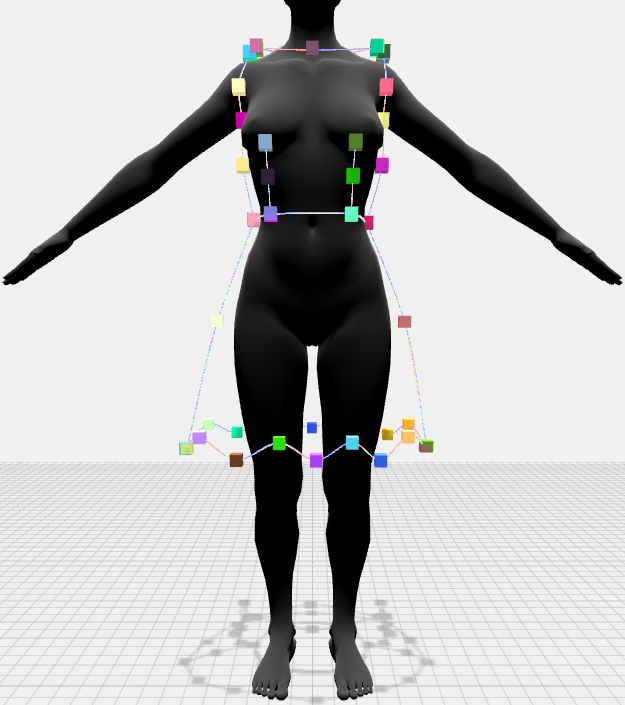
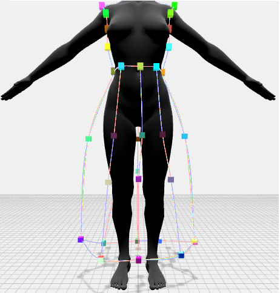

<section class="space">

    <!-- <p>paa</p>
    <div class="canva-container">
        <canvas id="canvas" width=500 height=500></canvas>   
    </div> -->
    <div>
    <div class="menu-wrapper row">
        
    <div class="load-export col-1 form-check ">
      <button class="btn row" (click)="openModal(loadContent, 1)">Alege</button>
      <button class="btn row" (click)="sendID(0)">Încarcă</button>
      <button class="btn row" (click)="exportSpline()">Salvează</button>
    </div>
    

    <div class="inputs-div col-2 form-check ">
      <div class="row">
      <label class="col-2">x:</label>
      <input class="inputs-numbers coords col" type="text" [(ngModel)]="point[0]"> 
      </div>
      <div class="row">
      <label class="col-2">y:</label>
      <input class="inputs-numbers coords col" type="text" [(ngModel)]="point[1]" >
      </div>
      <div class="row">
      <label class="col-2">z:</label>
      <input class="inputs-numbers coords col" type="text" [(ngModel)]="point[2]" >
      </div>
    </div>
   
    <div class="start-end-op col-2 form-check ">
      <svg xmlns="http://www.w3.org/2000/svg" width="20" height="20" fill="currentColor" class="bi bi-patch-plus row" viewBox="0 0 16 16" (click)="onValueChangePoint()">
        <path fill-rule="evenodd" d="M8 5.5a.5.5 0 0 1 .5.5v1.5H10a.5.5 0 0 1 0 1H8.5V10a.5.5 0 0 1-1 0V8.5H6a.5.5 0 0 1 0-1h1.5V6a.5.5 0 0 1 .5-.5z"/>
        <path d="m10.273 2.513-.921-.944.715-.698.622.637.89-.011a2.89 2.89 0 0 1 2.924 2.924l-.01.89.636.622a2.89 2.89 0 0 1 0 4.134l-.637.622.011.89a2.89 2.89 0 0 1-2.924 2.924l-.89-.01-.622.636a2.89 2.89 0 0 1-4.134 0l-.622-.637-.89.011a2.89 2.89 0 0 1-2.924-2.924l.01-.89-.636-.622a2.89 2.89 0 0 1 0-4.134l.637-.622-.011-.89a2.89 2.89 0 0 1 2.924-2.924l.89.01.622-.636a2.89 2.89 0 0 1 4.134 0l-.715.698a1.89 1.89 0 0 0-2.704 0l-.92.944-1.32-.016a1.89 1.89 0 0 0-1.911 1.912l.016 1.318-.944.921a1.89 1.89 0 0 0 0 2.704l.944.92-.016 1.32a1.89 1.89 0 0 0 1.912 1.911l1.318-.016.921.944a1.89 1.89 0 0 0 2.704 0l.92-.944 1.32.016a1.89 1.89 0 0 0 1.911-1.912l-.016-1.318.944-.921a1.89 1.89 0 0 0 0-2.704l-.944-.92.016-1.32a1.89 1.89 0 0 0-1.912-1.911l-1.318.016z"/>
      </svg>
      <button class="btn row" (click)="setStartPoint()">Primul punct</button>
      <button class="btn row" (click)="setLastPoint()">Ultimul punct</button>
    </div>
   
    <div class="add-seam col-1 form-check ">
      <label class="row">Număr puncte</label>
      <input class="inputs-numbers row" type="text" [(ngModel)]="nr_points" >
      <button class="btn row" (click)="addNewSeam()">Adaugă</button>
    </div>

    <div class="see-seam-no col-2 form-check ">
      <label class="row">Index cusătură</label>
      <input class="inputs-numbers row" type="text"  [(ngModel)]="index_seam">
      <button class="btn row" (click)="getIndexSeam()">Vizualizează</button>
    </div>

    <div class="add-point col-1 form-check ">
      <button class="btn row" (click)="addPoints()">Adaugă punct</button>
      <input class="inputs-numbers row" type="number" id="index" [(ngModel)]="index" required > 
      <svg xmlns="http://www.w3.org/2000/svg" width="16" height="16" fill="currentColor" class="bi bi-info-circle row" viewBox="0 0 16 16" (click)="openModal(longContent, 2)">
          <path d="M8 15A7 7 0 1 1 8 1a7 7 0 0 1 0 14zm0 1A8 8 0 1 0 8 0a8 8 0 0 0 0 16z"/>
          <path d="m8.93 6.588-2.29.287-.082.38.45.083c.294.07.352.176.288.469l-.738 3.468c-.194.897.105 1.319.808 1.319.545 0 1.178-.252 1.465-.598l.088-.416c-.2.176-.492.246-.686.246-.275 0-.375-.193-.304-.533L8.93 6.588zM9 4.5a1 1 0 1 1-2 0 1 1 0 0 1 2 0z"/>
      </svg>
    </div>

    <div class="remove-point col-1 form-check ">
      <label class="row">Șterge punct</label>
      <input class="inputs-numbers row" type="text"  [(ngModel)]="delete_from_seam">
      <button class="btn row" (click)="deleteFromSeam()">Șterge</button>
    </div>

    <div class="remove-seam col-1 form-check ">
      <label class="row">Șterge cusatura</label>
      <input class="inputs-numbers row" type="text"  [(ngModel)]="delete_from_seam">
      <button class="btn row" (click)="deleteSeam()">Șterge</button>
    </div>

    <div class="remove-seam col-1 form-check ">
      <button class="btn row" (click)="sendGraphToCluster()">Trimite</button>
    </div>

    <ng-template #loadContent let-modal>
      <div class="modal-header">
        <h4 class="modal-title">Tipuri puncte 3D</h4>
        <button type="button" class="close" aria-label="Close" (click)="modal.dismiss('Cross click')">
          <span aria-hidden="true">&times;</span>
        </button>
      </div>
      <div class="modal-body">
            <div class="img" (click)="sendID(66)">
                
            </div>
            <div class="img" (click)="sendID(4)">
                
            </div>
            <div class="img" (click)="sendID(5)">
                
            </div>
            <div class="img" (click)="sendID(8)">
                
            </div>
            <div class="img" (click)="sendID(6)">
              
            </div>
            <div class="img" (click)="sendID(9)">
              
            </div>
            <div class="img" (click)="sendID(13)">
              
            </div>
            <div class="img" (click)="sendID(12)">
              
            </div>
            <div class="img" (click)="sendID(65)">
              
            </div>
      </div>
      <div class="modal-footer">
          <button type="button" ngbAutofocus class="btn btn-focus" (click)="modal.close('Ok click')">Ok</button>
      </div>
    </ng-template>

    <ng-template #longContent let-modal>
        <div class="modal-header">
          <h4 class="modal-title">Model încărcat</h4>
          <button type="button" class="close" aria-label="Close" (click)="modal.dismiss('Cross click')">
            <span aria-hidden="true">&times;</span>
          </button>
        </div>
        <div class="modal-body">
            
        </div>
        <div class="modal-footer">
            <button type="button" ngbAutofocus class="btn btn-focus" (click)="modal.close('Ok click')">Ok</button>
        </div>
    </ng-template>
    </div>
    <!-- input type="text" class="input" id="email" [(ngModel)]="email" required name="email" placeholder="email" -->
    <div class="engine-wrapper">
        <canvas #rendererCanvas id="renderCanvas" 
        (click) = "clickme()"
        ></canvas>
      </div>
      </div>
</section>

